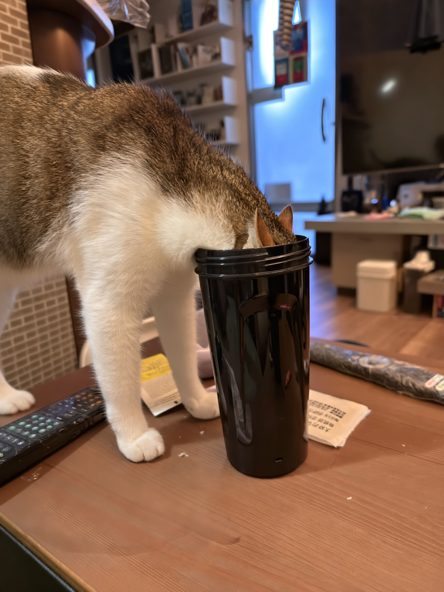

辦公桌上的「黑洞探索者」：我家貓咪的特務日常
高嘉靖│策略發展室＼生成式人工智能研發部
常聽大家說「貓咪是水做的」，但我家這隻虎斑顯然認為自己是「鑽頭做的」。
照片裡這一幕發生在某個平凡的晚上，我剛把洗好的黑色隨行杯順手放在桌上，一轉身就看見了這個極具喜感的畫面。牠居然整顆貓頭「直挺挺」地插進杯口，只留下兩隻可愛的白手套端正站好，像極了一位正在進行極密潛入任務的特務。
這個深不見底的隨行杯，在人類眼裡只是一個喝水容器，在牠眼裡卻成了必須征服的神秘黑洞。究竟是杯底殘留的香氣太誘人，還是單純覺得裡面藏著貓罐頭？我們無從得知。但看牠那專注又倔強的背影，完全不在乎自己的大頭會不會卡住，更不在乎姿勢有多滑稽，整隻貓散發著「今天不查個水落石出絕不退場」的決心。
每當工作被各種專案追著跑、感到心力交瘁時，回頭看見家裡這隻「探險家」為了幾公分的杯底奮力掙扎，嘴角總會忍不住失守。牠用實際行動向大家證明：好奇心是無敵的，即使偶爾會把自己「卡」在尷尬的情境裡，也要保持優雅的站姿與無畏的熱情。
這張照片送給每天在職場上勇往直前的各位同事，希望這個毛茸茸的小插曲，能為大家的忙碌日常帶來一抹輕鬆微笑！
 |